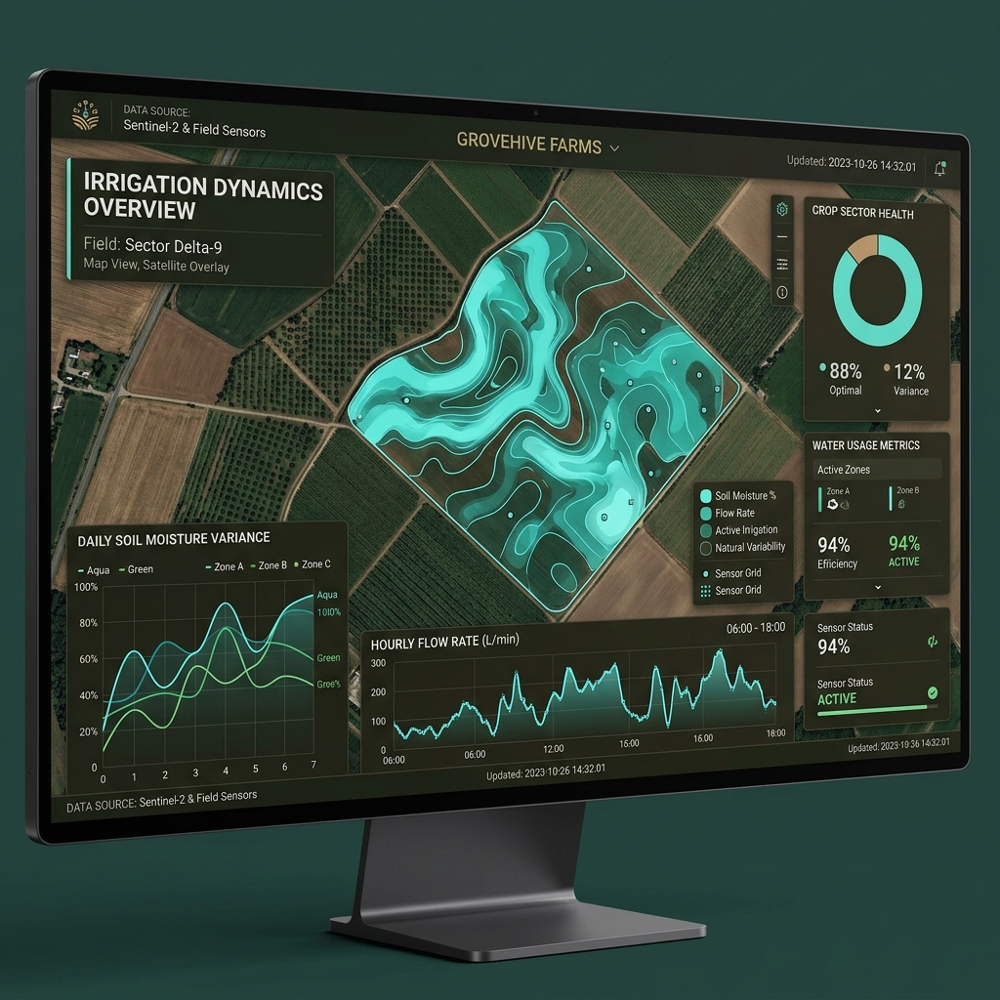

The biggest hidden flaw in most smart irrigation systems is this: they still assume irrigation is predictable. Even advanced systems—like multi-zone controllers or app-based solutions—often operate within structured schedules or fixed thresholds. They try to impose order on a system that is naturally chaotic.
Oriva challenges this assumption entirely. We believe that for irrigation to be truly smart, it must embrace the non-linear reality of the field.
Irrigation is Not Periodic — It is Chaotic
Field conditions are never uniform. They are constantly influenced by a complex web of factors:
- Soil Heterogeneity: Different parts of the same field hold water differently.
- Microclimate Variations: Wind, shade, and humidity levels can vary significantly across a single acre.
- Crop Stage Differences: A plant’s water needs change drastically as it moves from seedling to maturity.
Most systems simplify this into: “Water every X days” or “Water when threshold Y is reached.” Oriva instead embraces non-linear irrigation patterns.
The Power of Variable Irrigation Cycles
A key uniqueness of Oriva is that irrigation timing is not fixed. Recommendations may change daily. There is no “stable schedule.” This might seem counterintuitive, but it is highly realistic and mimics natural farming intuition.
For example, a typical Oriva-managed week might look like this:
- Day 1: Irrigate based on overnight moisture loss.
- Day 3: Skip expected irrigation because soil retained moisture better than predicted.
- Day 4: Irrigate earlier than expected due to a sudden micro-spike in temperature.
Behavior-Based Irrigation vs. Thresholds
Instead of relying on simple "dry/wet" thresholds, Oriva tracks soil behavior patterns. It learns how quickly your specific soil dries under various conditions and adapts the frequency accordingly. This creates field-specific intelligence rather than just generic crop rules.
Practical Impact on the Farm
This philosophy leads to three major advantages:
- Reduced Unnecessary Cycles: By skipping "scheduled" waterings that aren't needed, you save significant water and energy.
- Better Root Development: Plants adapt naturally to slight variances in water availability, encouraging deeper root growth.
- Lower Energy Usage: Less pumping means lower electricity bills and less wear and tear on your irrigation hardware.
Oriva’s biggest innovation is not hardware or sensors. It is this core idea: Irrigation should not be scheduled—it should be decided continuously.